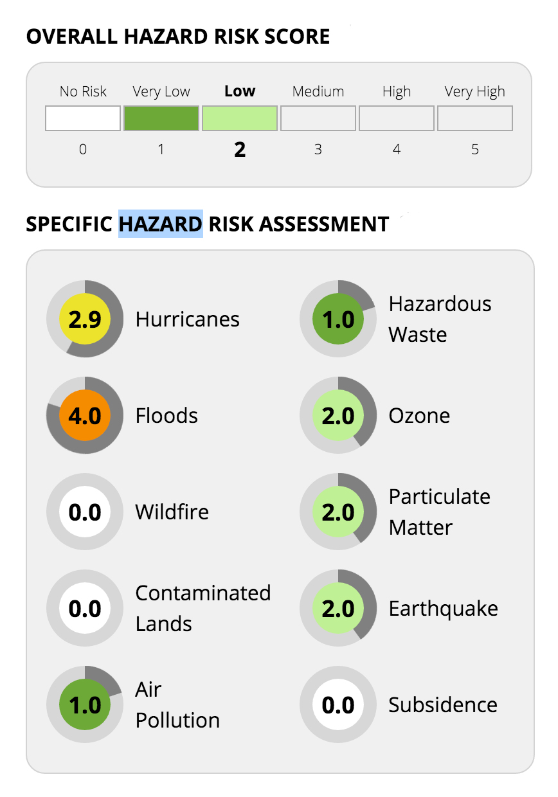

Dec 2015 - Jan 2016
Hazard Risk Assessment is a tool to visualize the individual as well as overall hazard risks associated with a property.
- Sahil Yousif Anand
- Vishwas Shetty
As a student assistant in the Department of Urban Planning and Research at University of Washington, we were asked to create a visualization to show the different hazard risks that would affect a property. This visualization had to be incorporated into a website that helped potential buyers in assessing the overall risk factor while purchasing a property.
We met with the professor as to understand his requirements for the visualization. The professor had a team working on a website that showed the risk layer for varous hazards on a map. On applying all the hazard layers on the map, it was difficult for the users to differentiate between the risk layers and summarize the overall risk associated with their property.
We had to fit this visualization on a sidebar that opened when a user clicked on a property. The visualization also had to dynamically change and update the risks accordingly based on the property that the user choose to see.
First Iteration

We used CSS3 and Javascript to render the visualization on the browser. We tested this visualization with few users and recorded the observations. We noticed that users were overwhelmed with data with all the circular donut charts. We also noticed that the Overall Hazard Risk Score and the individual risk score were segregated. This prototype also lacked extensibility.
Second Iteration
We went back to the drawing board and researched a little more and came across Aster Plots. This visualization suited our needs. So we used D3 javascript library to create Aster plots to show the risk associated with each property. This proved to be extensible as well. After testing this prototype with users, they felt that it was consise and resourceful.

The website, which uses the visualization, is being used for a research project whose contents currently are confidential and is behind a member login.